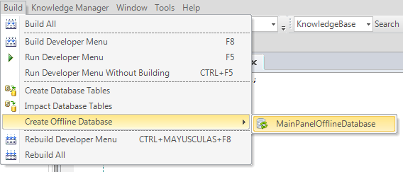

This action generates the Offline Database reorganization files. You can find this action in the Build menu or in the Context Menu of the Offline Database object by right-clicking on it.  ConsiderationsThis action is only visible when there is at least one Offline Database object in the Knowledge Base. AvailabilityThis feature is available since GeneXus X Evolution 3. See also
|
| Backlinks |
| Offline Database reorganization |